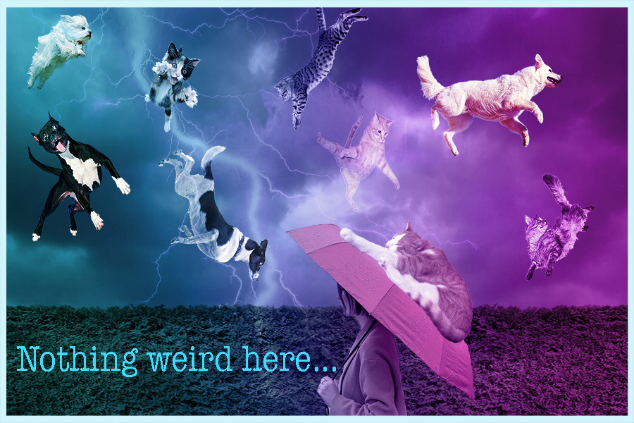

Home | Photoshop | Illustrator | Animate | InDesign | Contact

The concept for my project was to create a literal interpretation of raining cats and dogs. This project took a lot of work because I created multiple layers for each animal and erased the backgrounds of each image. I added a gradient to act as a filter to make the image look more dynamic.